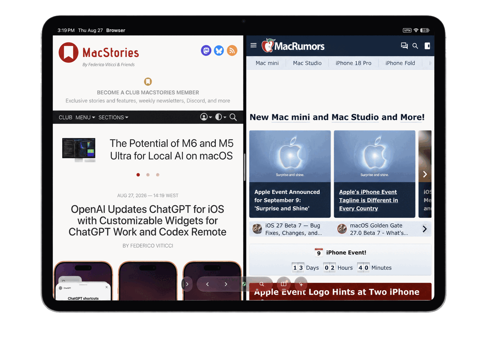
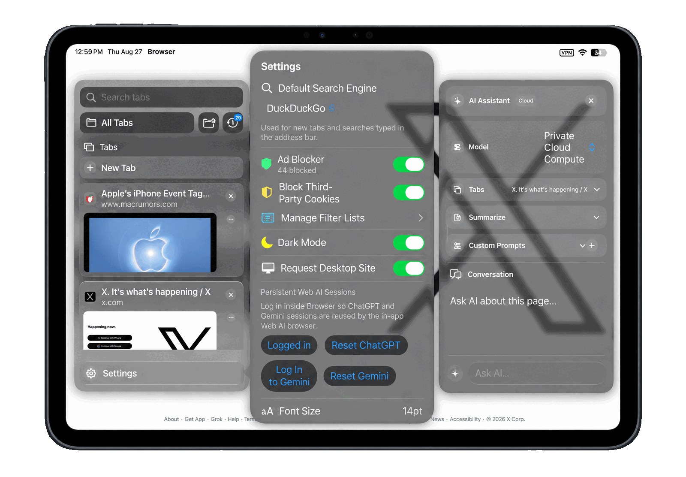
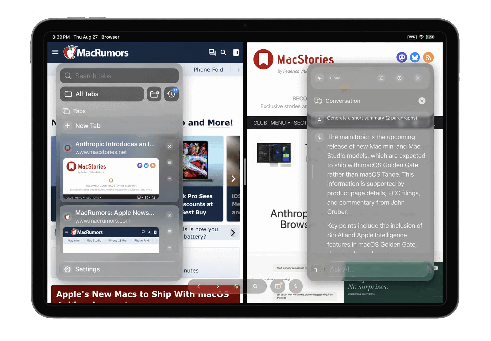
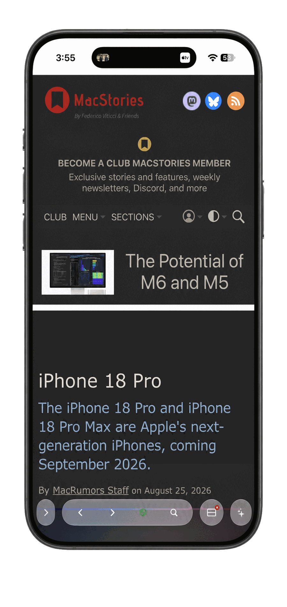
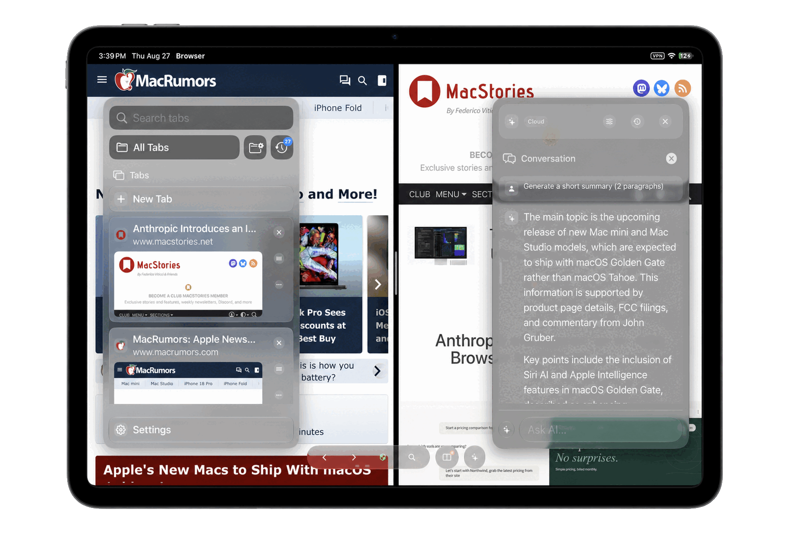

Desktop-style browsing
Full tabs, favorites, split-screen support and navigation designed around the larger iPad canvas.
 Vortex Browser
Vortex Browser
Vortex brings desktop-style browsing, useful multitasking and AI tools into one focused browser for iPad and iPhone.

Full tabs, favorites, split-screen support and navigation designed around the larger iPad canvas.
Summarize, explain and ask questions about the page without breaking your reading flow.
Reader mode, content blocking, incognito tabs and saved credentials protected by Apple Keychain.
Keep Vortex beside another app in Split View. Research, compare and move between full webpages without falling back to a stretched phone layout.

Open the assistant beside what you are reading, generate a summary or continue with your own question.


The same browser, reader and assistant tools adapt to a smaller screen, with compact controls that stay out of the page’s way.

Open, close and revisit pages from a sidebar that shows useful previews without taking over the whole screen.
When Vortex was first shared with r/iosapps, people immediately volunteered to try it.
“Looks great, would definitely try it.”
u/Sav4geMode
“Very interesting! Go for it, you won't regret it.”
u/AWH061
“I’d like to give it a try!”
u/wamplestiltsken
“Or they rejected it because, out of the box, it’s better than 15 years of iPad Safari...”
u/volatilefocus
“Interested!”
u/omong-omong-aja
“Looks great! I’m interested!”
u/Guilty_Commission_79
Vortex Browser is free and open source. Read the code, learn from it, change it and contribute under the MIT License.